Tongasoa
Zazakely
Une Association pour
les enfants défavorisés
de Madagascar 🇲🇬
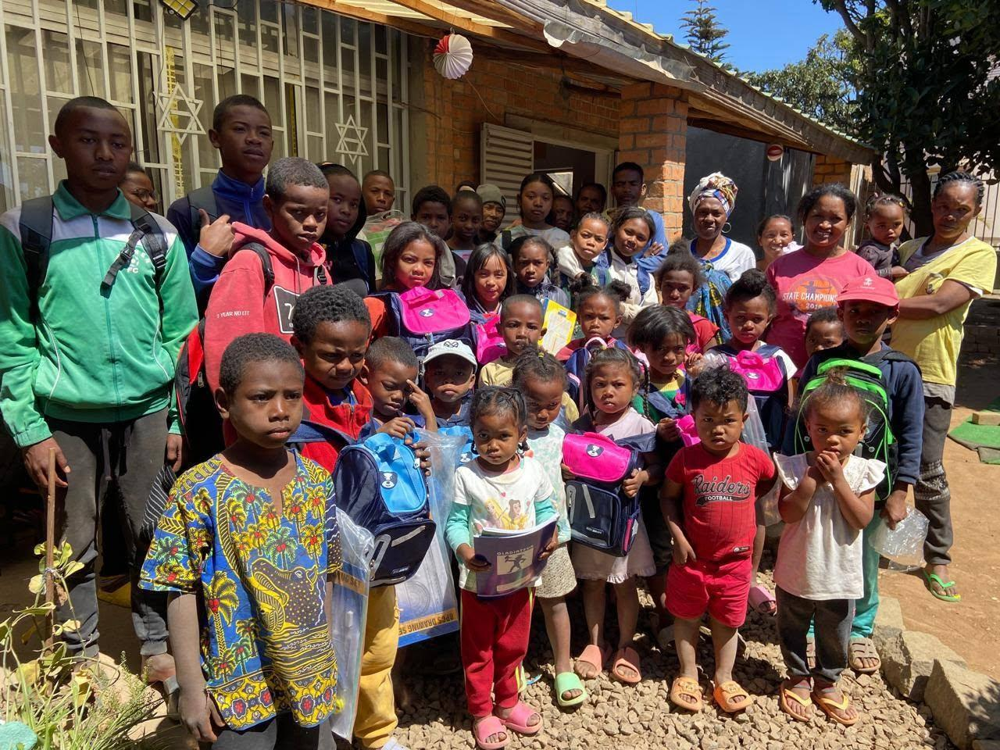
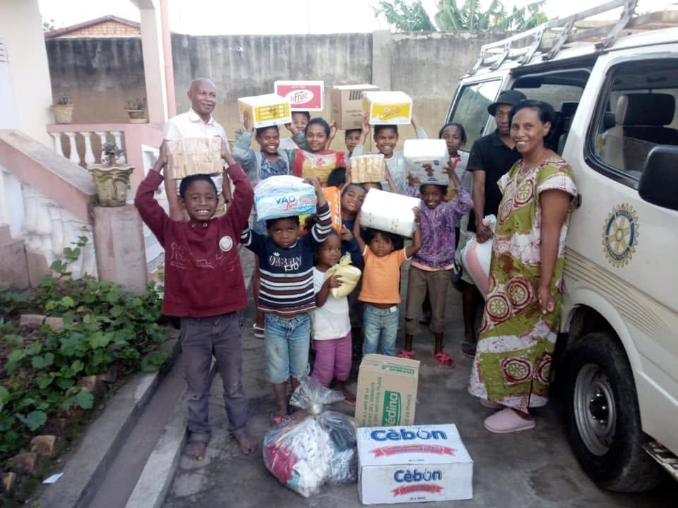
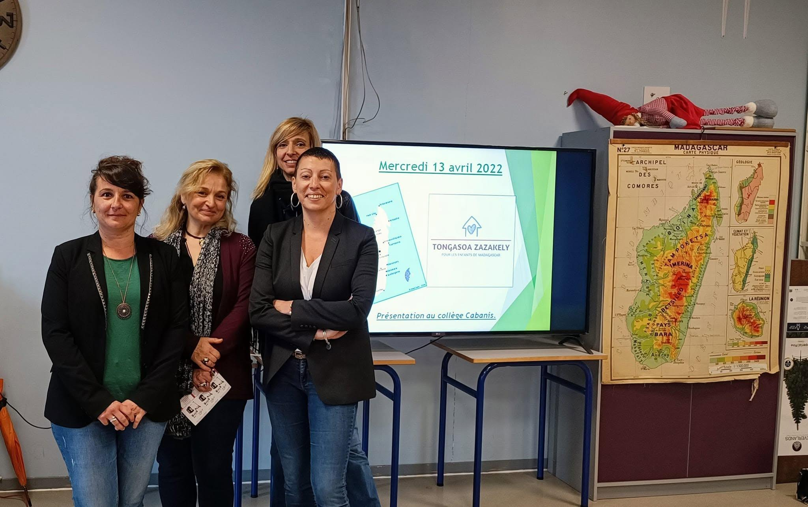
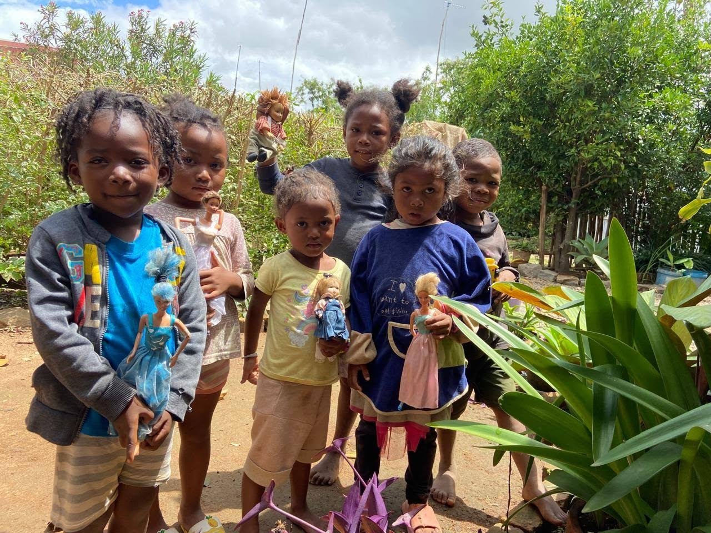
À Antananarivo, nous parrainons un orphelinat, nous nous assurons que les enfants reçoivent les soins nécessaires et nous participons à la rémunération des nounous.
Depuis 2009
Nos Engagements
Nous travaillons aussi en collaboration avec l'association Lova Soa afin d'améliorer les conditions de vie des enfants défavorisés du quartier.
- Favoriser l'accès à l'éducation
- Promouvoir une alimentation saine et équilibrée
- Améliorer les conditions d'hygiène et de santé
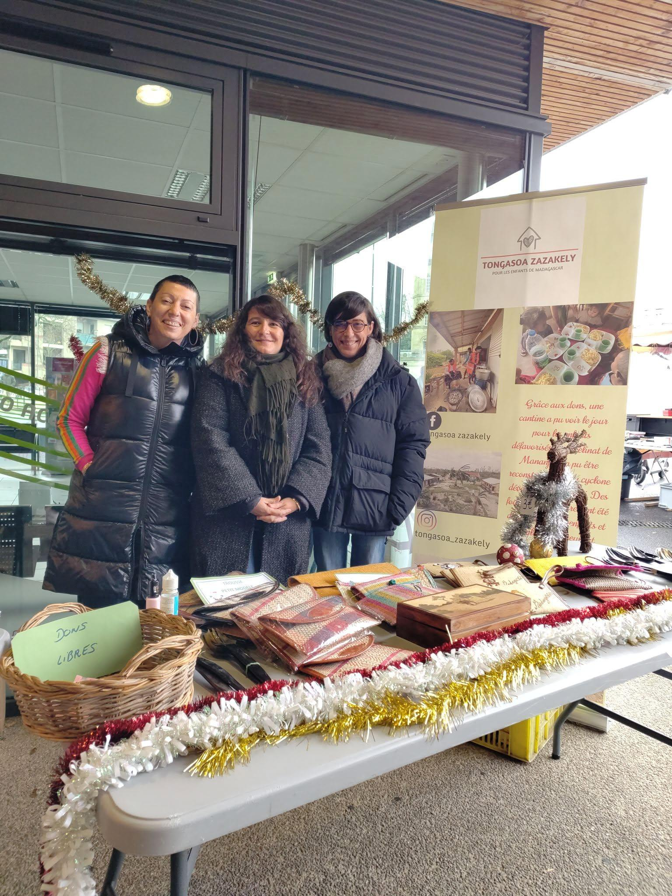
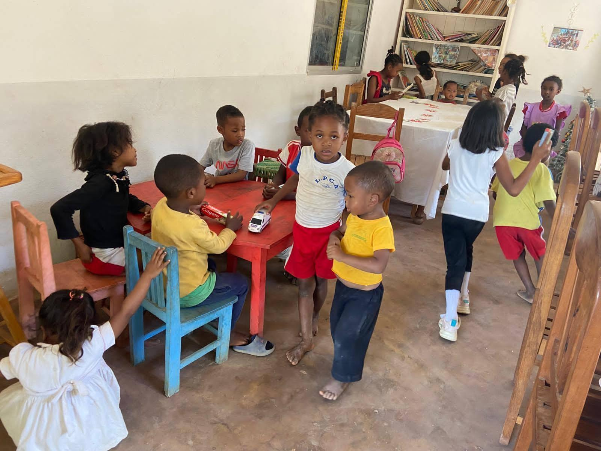
RNA W191001522
Nos Projets
Un repas chaud
Nous contribuons au financement de la cantine afin de permettre aux enfants de bénéficier d’un repas chaud quotidien.
Matériel scolaire et produits d’hygiène
Pour soutenir l’éducation, le bien-être et la vie quotidienne des enfants.
Actions solidaires
Nous participons également à des projets ponctuels, comme la reconstruction de l’orphelinat Catja, détruit lors du passage d’un cyclone.
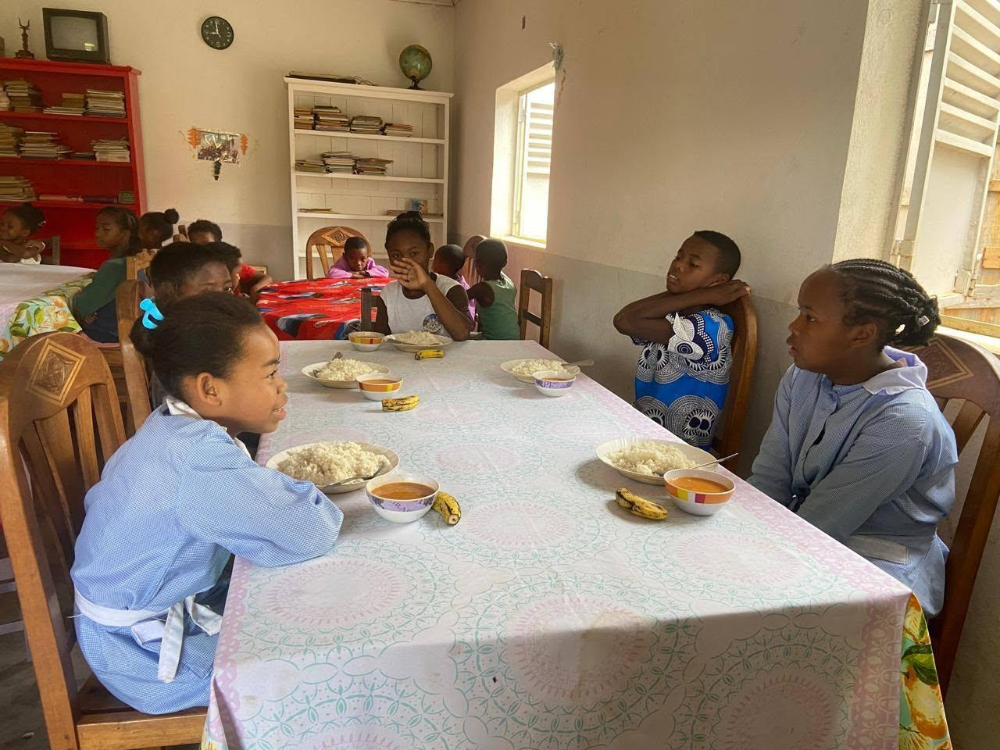

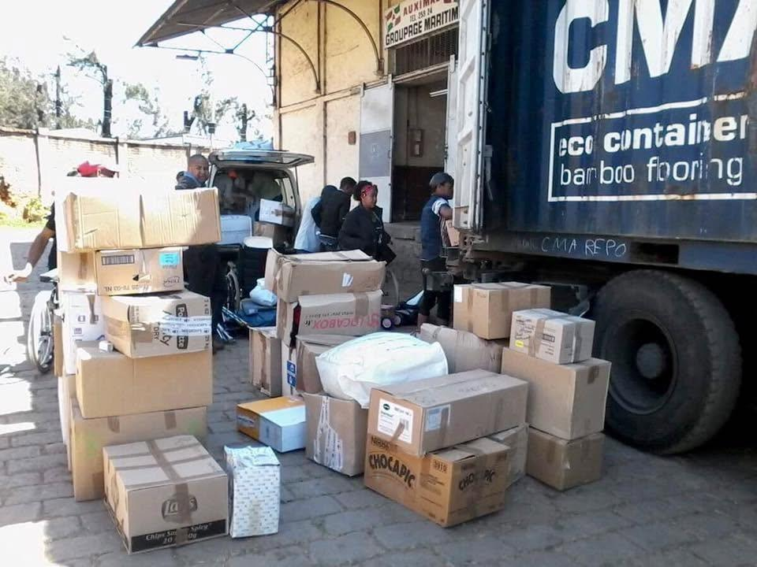
Des séjours pour découvrir la mer
Une semaine
à dix jours
Durée envisagée selon les dons réunis. Le projet vise un départ une fois par an, si les dépenses indispensables peuvent être financées.
D’Antananarivo
à Foulpointe
Transport en
taxis-brousse pour le groupe d’enfants.
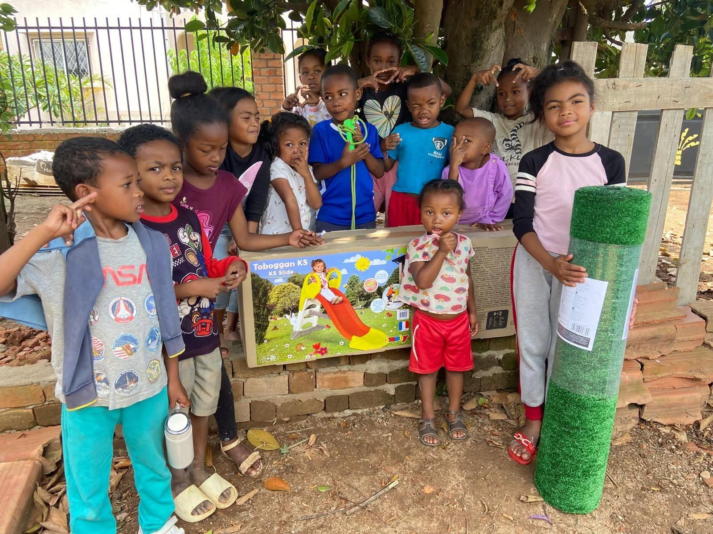
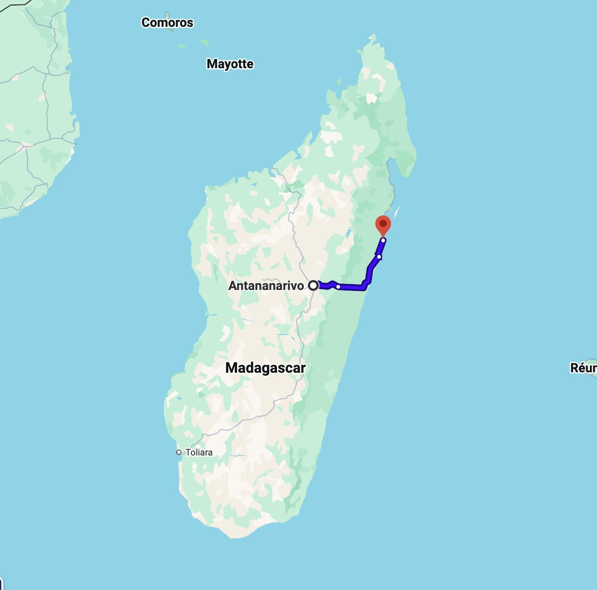
Un objectif concret
Le but de cette collecte est de participer au départ en vacances d'une trentaine d'enfants.
- Le transport
- Le couchage
- Les sanitaires
- Les repas
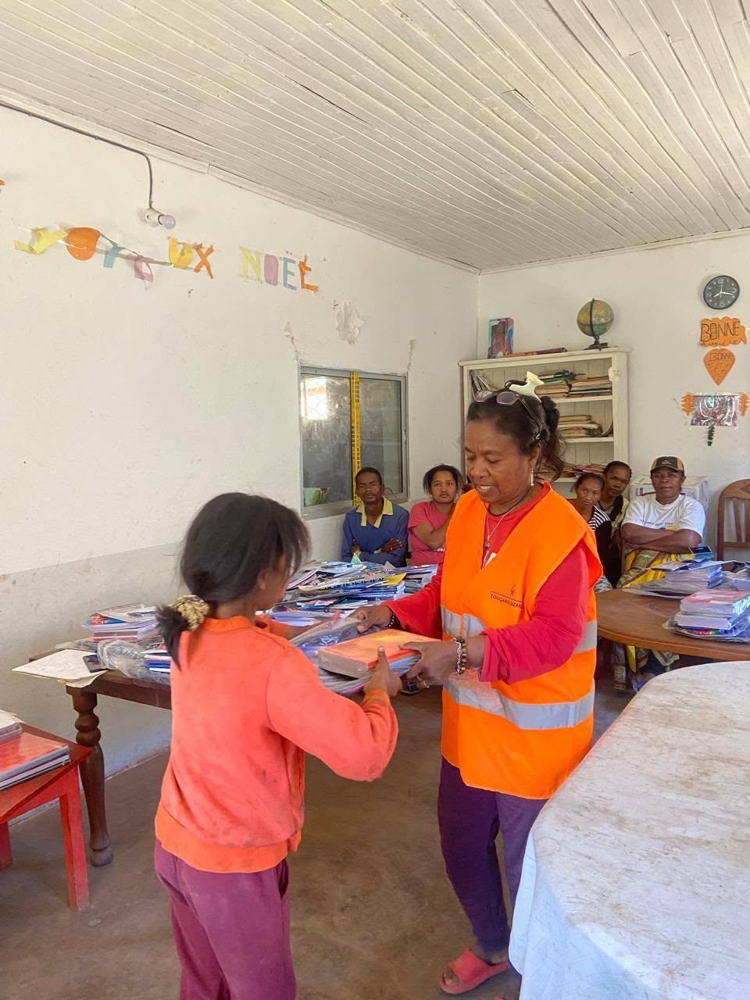
La collecte est ouverte sur HelloAsso. Le montant peut évoluer : consultez la page pour connaître les contributions à jour.
Faire un don sur HelloAssoMerci d’être là !
Suivez notre association et projets sur nos réseaux sociaux:
Pour nous
soutenir:
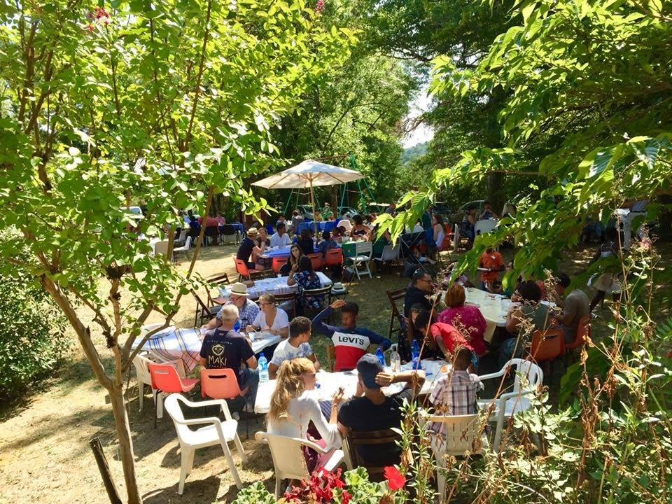